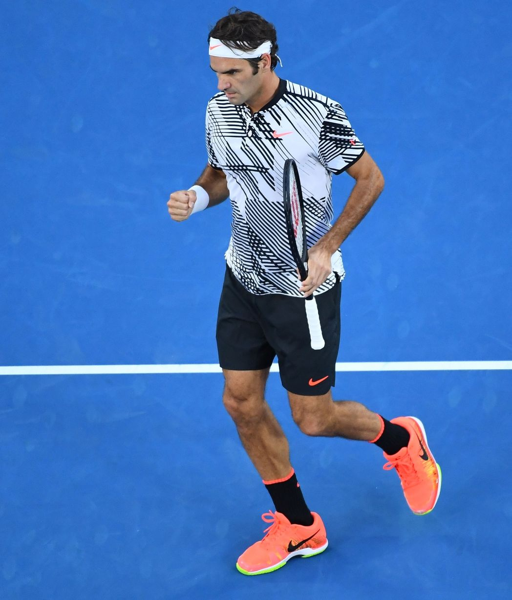
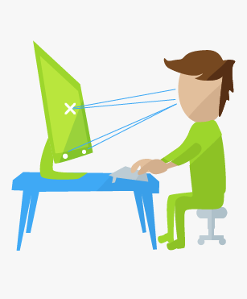

I've modeled a lot of my tennis after Roger's -- the service motion, the attacking forehand, and even a valiant attempt at going one-handed on the backhand. So it probably doesn't come as a surprise that I wanted to analyze his match statistics, but I was struggling to find a pre-existing dataset. I used this as an opportunity to learn how to web-scrape, downloading his match data from the ATP website. The only insights I gleaned from the analysis was how dominant his forehand his (shocking I know), but learning web-scraping showed that I could find data everywhere. If you're curious, take a closer look here.
Tools/Concepts:
Python, web-scraping


Steph Curry is one of my favorite basketball players, and I analyzed his performance in home/away games, against different teams, over time, and contribution to win shares in this analysis. You can take a closer look here.
Tools:
Python (webscraping, data cleaning), R Markdown (statistical analyses, formatting)
Tools:
Python (webscraping, data cleaning), R Markdown (statistical analyses, formatting)

Given how much time we spend in front of the screen, our eyes are constantly strained, which manifests with reduced blinking rates. With that in mind, for Hack Arizona 2018, we built a solution that printed a warning message and made the monitor go to sleep if the person's number of blinks is below a threshold or too much time has elapsed, reminding the person to take a break. It was rewarding to see how I was able to leverage existing skills to solve an important health problem, and we won Best Health for our efforts!
Tools:
Python, eye tracking technology
Tools:
Python, eye tracking technology